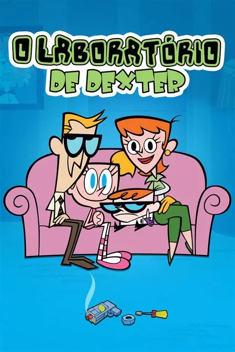

Cavaleiros do Zodíaco (1986)
Uma série épica de ação e aventura com heróis lutando pelo bem da humanidade.

Pinky e o Cérebro (1995)
As peripécias de dois ratos que tentam dominar o mundo de uma maneira hilária.

Dragon Ball Z (1989)
A famosa saga de Goku e seus amigos, enfrentando inimigos poderosos e épicas batalhas.

Homem-Aranha (1994)
A aventura do super-herói aracnídeo em sua luta contra os vilões de Nova York.

Johnny Bravo (1997)
Comédia sobre um homem musculoso e desajeitado em suas tentativas de conquistar as mulheres.

Pokémon (1997)
A jornada de Ash Ketchum e seus amigos para se tornar um mestre Pokémon.

O Laboratorio de Dexter (1996)
Dexter é um menino gênio que construiu um laboratório secreto atrás do armário do seu quarto.

He-Man e os Defensores do Universo (1983)
O homem mais poderoso do universo, He-Man, vai contra as forças do mal de Esqueleto para salvar o planeta Eternia e proteger os segredos do Castelo de Grayskull.